S34 — हमें Deja Vu का एहसास क्यों होता है?
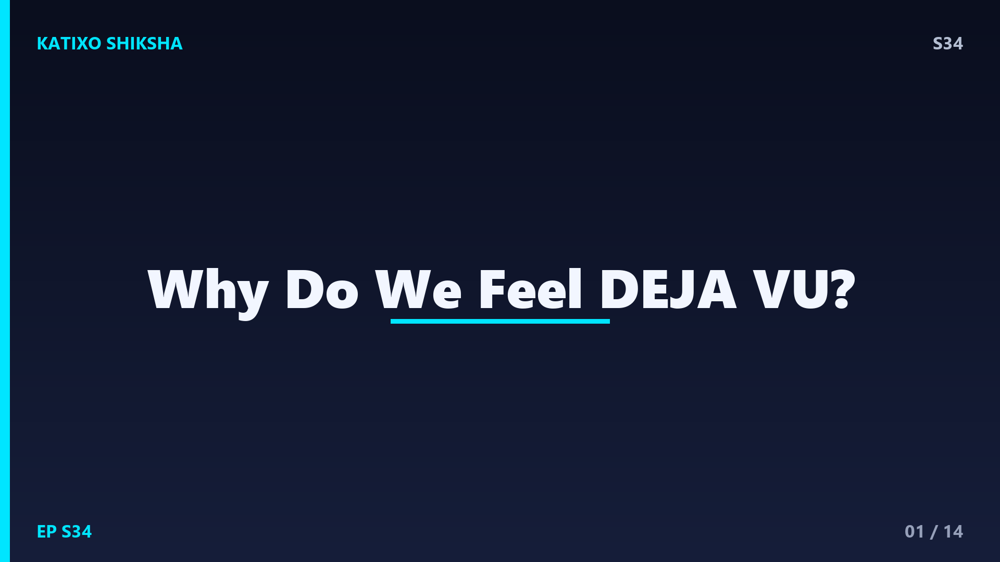
Slide 1दोस्तों, कभी ऐसा हुआ है — तुम किसी नई जगह पहुँचते हो, या किसी से पहली बार बात कर रहे हो, और अचानक एक अजीब-सा एहसास होता है — अरे, ये पल तो पहले भी हो चुका है! जबकि तुम पक्का जानते हो कि ऐसा कभी हुआ ही नहीं। इस रहस्यमय feeling को कहते हैं deja vu, एक French शब्द जिसका मतलब है पहले देखा हुआ। आज Katixo KhojLab पर हम इस दिमागी पहेली को खोलेंगे — क्या ये कोई जादू है, या तुम्हारे brain का एक छोटा-सा glitch? चलो पता करते हैं!
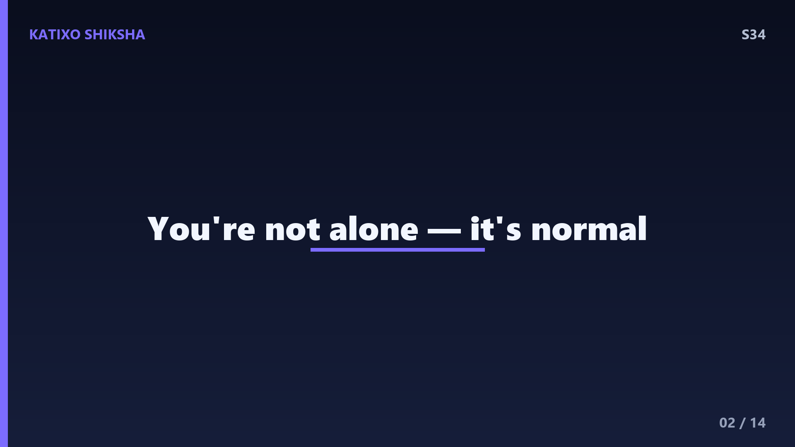
Slide 2पहले एक मज़ेदार fact। Deja vu बहुत common है — दुनिया के करीब 60 से 70 percent लोग कभी न कभी इसे महसूस करते हैं, खासकर 15 से 25 साल की उम्र के बीच। यानी तुम बिल्कुल अकेले नहीं हो! ये अक्सर कुछ ही seconds रहता है और फिर गायब हो जाता है। और सबसे दिलचस्प — ये किसी बीमारी की निशानी नहीं, बल्कि एक healthy brain का एक आम अनुभव है। तो घबराने की कोई बात नहीं — ये तो तुम्हारे दिमाग के busy होने का सबूत है!
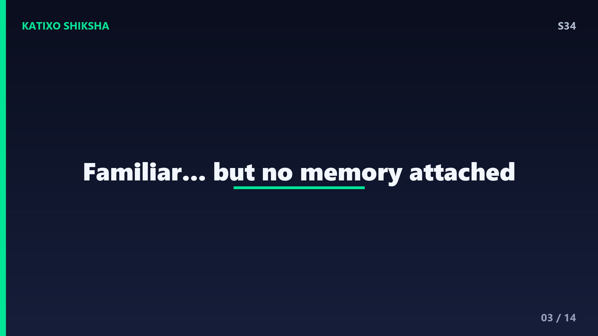
Slide 3अब समझो memory काम कैसे करती है। तुम्हारे brain में एक हिस्सा है hippocampus, जो नई यादें बनाता और पहचानता है — ये तय करता है कि कोई चीज़ नई है या जानी-पहचानी। साथ में काम करता है एक feeling — familiarity, यानी अपनापन। आम तौर पर जब कुछ familiar लगता है, तो साथ ही एक पक्की याद भी आती है कि ये कब-कहाँ हुआ था। पर deja vu में यही दो चीज़ें अलग हो जाती हैं — familiarity का एहसास आ जाता है, पर असली memory गायब रहती है। यहीं से शुरू होती है उलझन।
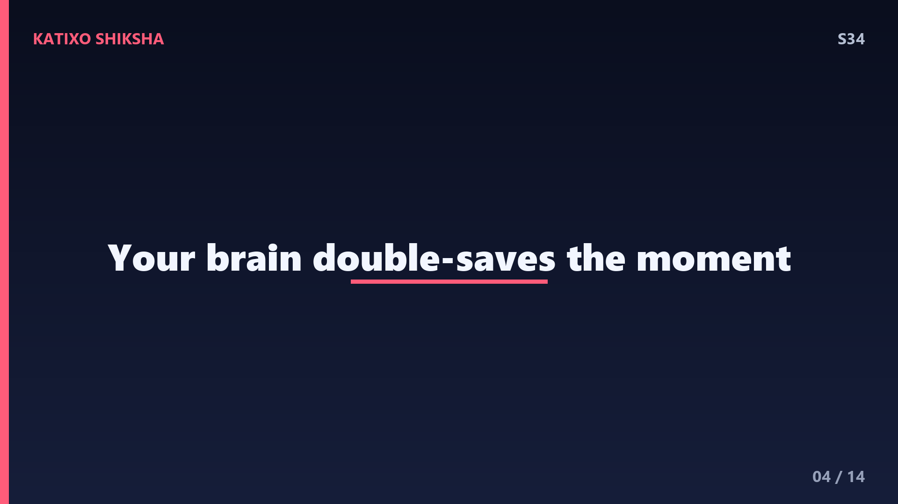
Slide 4अब सबसे popular theory — dual processing, यानी दोहरी प्रोसेसिंग वाली गड़बड़। तुम्हारा brain जानकारी को दो रास्तों से process करता है, और आम तौर पर दोनों एकदम tसाथ चलते हैं। पर scientists मानते हैं कि कभी-कभी एक रास्ते में एक छोटा-सा time-lag आ जाता है। तब एक हिस्सा उसी पल को दो बार register कर लेता है — पहली बार थोड़ा-सा पहले, और दूसरी बार ठीक उसके बाद। इसीलिए brain को लगता है कि ये पल पहले भी हो चुका है, जबकि वो पहली बार सिर्फ़ कुछ milliseconds पहले की बात है!
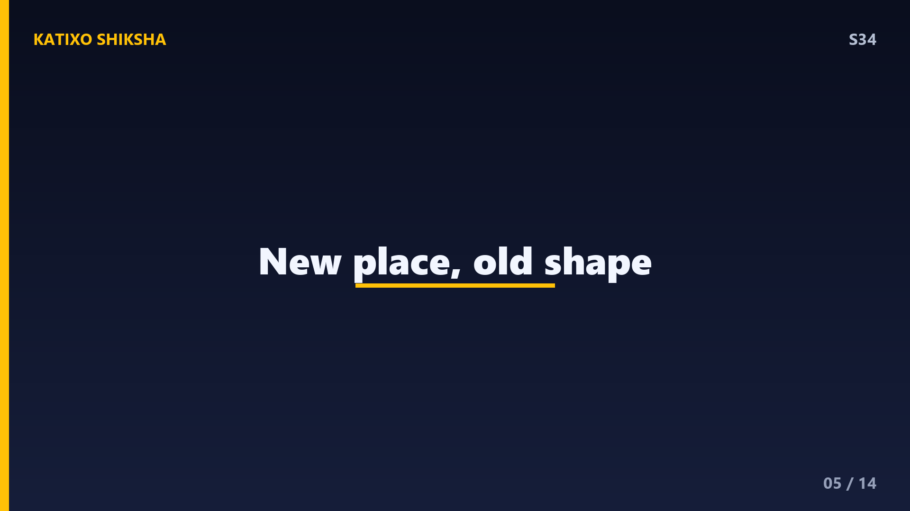
Slide 5दूसरी मज़ेदार theory है gestalt familiarity, यानी मिलते-जुलते माहौल वाली पहचान। मान लो तुम एक नए दोस्त के कमरे में जाते हो जहाँ पहले कभी नहीं गए। पर उस कमरे की settings — खिड़की की position, बिस्तर का कोना, पर्दे का रंग — किसी पुराने कमरे से मिलते-जुलते हैं जो तुम भूल चुके हो। तुम्हारा brain पूरे layout को familiar पहचान लेता है, पर वो पुरानी memory याद नहीं आती। नतीजा — पूरी जगह जानी-पहचानी लगती है बिना किसी ठोस वजह के। यही है deja vu का एक बड़ा कारण।
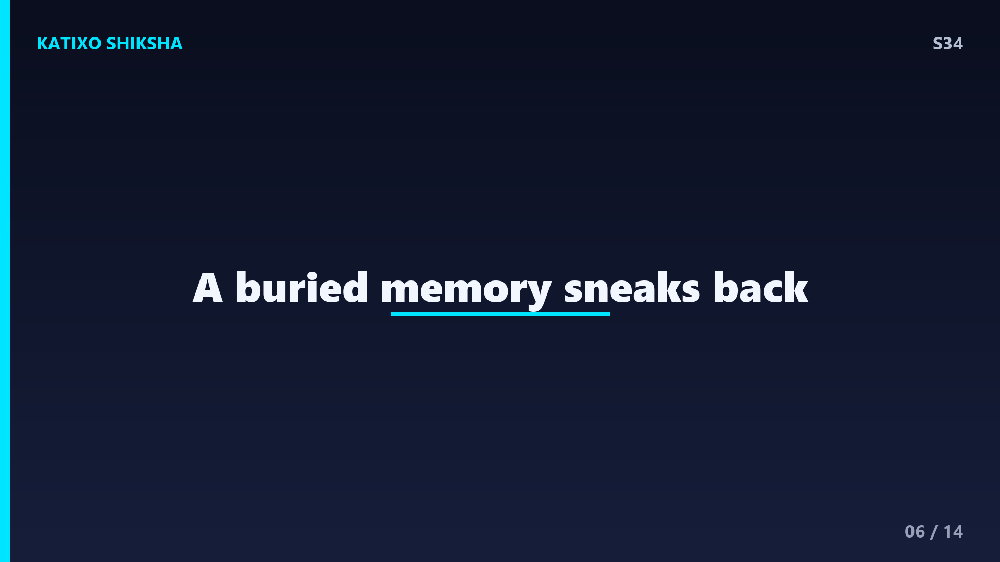
Slide 6एक तीसरा angle भी है — memory से जुड़ा। हमारा brain हर दिन ढेरों चीज़ें देखता है — कोई movie scene, कोई photo, कोई सपना, कोई किताब का दृश्य। इनमें से बहुत कुछ हम भूल जाते हैं, पर वो दिमाग के किसी कोने में दबा रहता है। फिर जब कोई असली पल उस भूली हुई चीज़ से मिलता-जुलता आता है, तो brain को familiarity तो महसूस होती है पर source याद नहीं आता। इसे scientists कहते हैं cryptomnesia जैसी छुपी हुई memory का असर — एक भूली याद जो चुपके से लौट आती है।
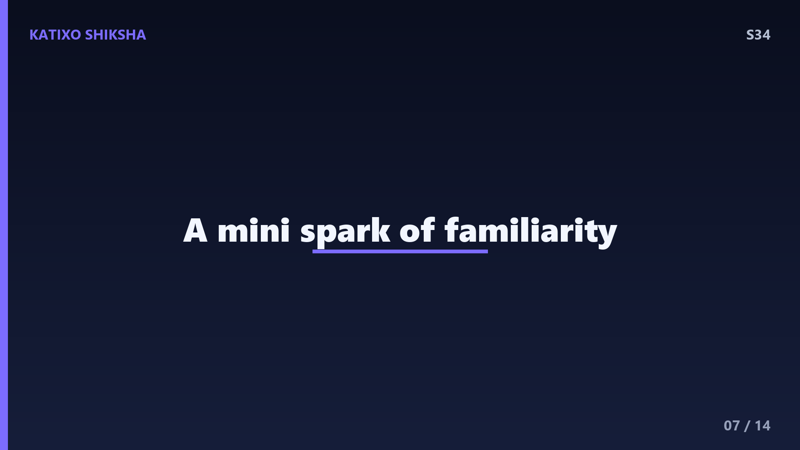
Slide 7अब brain के अंदर झाँकें। scientists को deja vu समझने में सबसे बड़ी मदद मिली कुछ ख़ास मरीज़ों से जिन्हें temporal lobe epilepsy होती है। इन लोगों को दौरे से ठीक पहले अक्सर बहुत तेज़ deja vu महसूस होता है। इससे पता चला कि deja vu का connection है brain के temporal lobe से — वही हिस्सा जहाँ memory और familiarity का काम होता है। यानी जब temporal lobe में एक छोटी-सी अनियमित electrical activity होती है, तो वो familiarity वाला signal गलती से चालू हो जाता है। एक mini spark, और झट से deja vu!
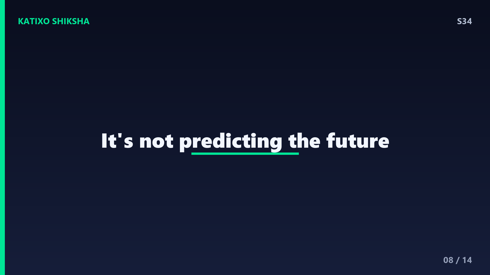
Slide 8एक common confusion दूर कर दें। deja vu का मतलब future देखना या भविष्यवाणी करना बिल्कुल नहीं है! बहुत लोग सोचते हैं कि उन्होंने इस पल को सपने में पहले देखा था, या उन्हें कोई sixth sense है। पर science कहती है — ये एक memory का छोटा-सा भ्रम है, predicting नहीं। असल में deja vu का उल्टा भी होता है — jamais vu, जहाँ कोई जानी-पहचानी चीज़ अचानक एकदम अजनबी लगने लगती है, जैसे कोई आम शब्द बार-बार बोलने पर अजीब लगने लगता है। brain के ये खेल वाकई दिलचस्प हैं!
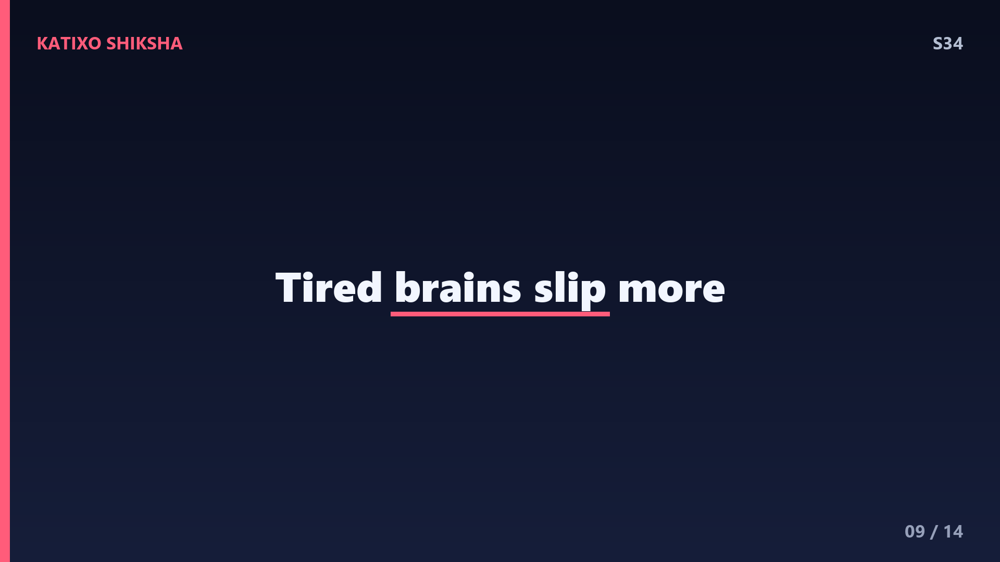
Slide 9तो deja vu आता कब ज़्यादा है? research बताती है कि ये उन लोगों में ज़्यादा होता है जो थके हुए हों, stressed हों, या नींद पूरी न हुई हो। क्योंकि थका हुआ brain जानकारी process करने में छोटी-छोटी गलतियाँ करता है, और वही time-lag या mix-up आसानी से हो जाता है। एक और दिलचस्प बात — जो लोग ज़्यादा travel करते हैं या ज़्यादा movies और किताबें देखते-पढ़ते हैं, उन्हें deja vu थोड़ा ज़्यादा होता है, क्योंकि उनके दिमाग में मिलते-जुलते दृश्यों का भंडार बड़ा होता है।
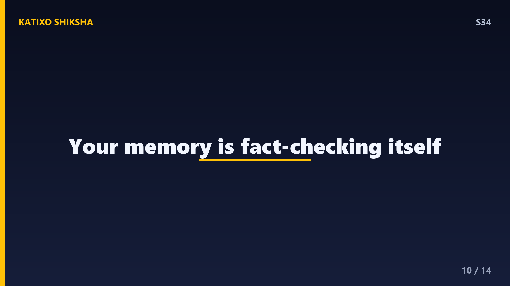
Slide 10अब एक बहुत राहत देने वाली बात। कुछ नए experiments में scientists ने lab में जानबूझकर deja vu पैदा किया — VR यानी virtual reality की मदद से लोगों को मिलते-जुलते दृश्य दिखाकर। उन्होंने पाया कि असल में deja vu brain का memory-checking system ठीक काम करने की निशानी है! दिमाग familiarity के signal को pakadता है और तुरंत check करता है — रुको, ये सच में हुआ था क्या? यानी deja vu असल में तुम्हारा brain अपनी memory की fact-checking करते हुए तुम्हें दिख जाता है। कमाल है ना!
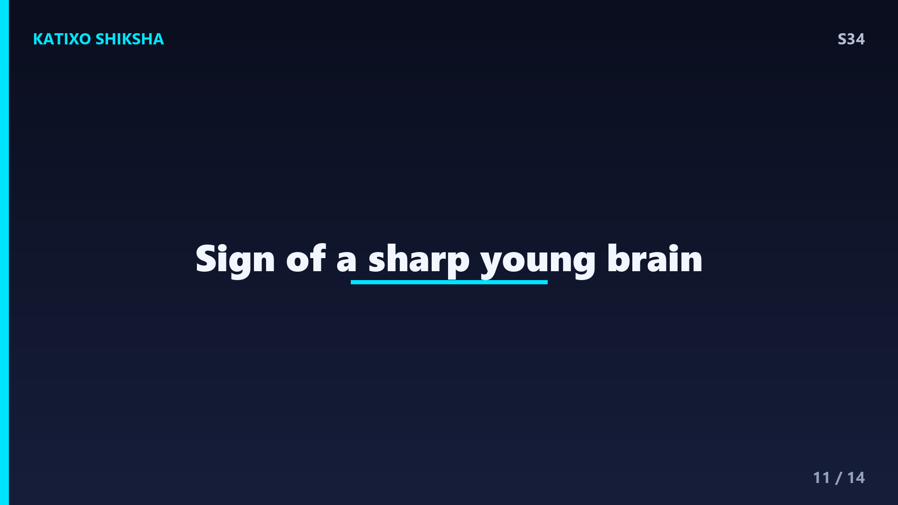
Slide 11एक आख़िरी रोचक बात। deja vu उम्र के साथ कम होता जाता है — जो teens और young adults में सबसे ज़्यादा होता है, वो 40-50 की उम्र के बाद काफ़ी घट जाता है। scientists को लगता है इसकी वजह ये है कि जवान दिमाग बहुत तेज़ और active होता है, इसलिए वो छोटे-मोटे memory mismatch को झट से पकड़ लेता है। तो दोस्तों, अगर तुम्हें अक्सर deja vu होता है, तो ये असल में तुम्हारे sharp और alert young brain की निशानी है। है ना मज़ेदार बात!
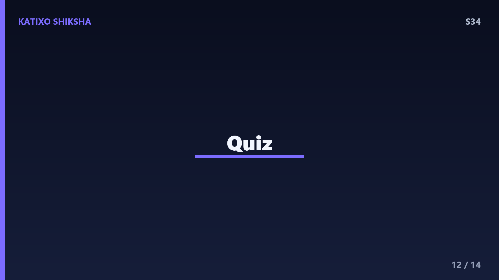
Slide 12Quick brain check! Video pause करो और तीनों सवालों के जवाब सोचो। पहला — deja vu में brain का कौन-सा एहसास आ जाता है पर असली memory गायब रहती है? दूसरा — brain का कौन-सा हिस्सा memory और familiarity से जुड़ा है, जिससे deja vu का connection मिला? और तीसरा — deja vu का उल्टा, जहाँ जानी-पहचानी चीज़ अजनबी लगे, उसे क्या कहते हैं? सोचो ज़रा... Ready? चलो answers देखते हैं!
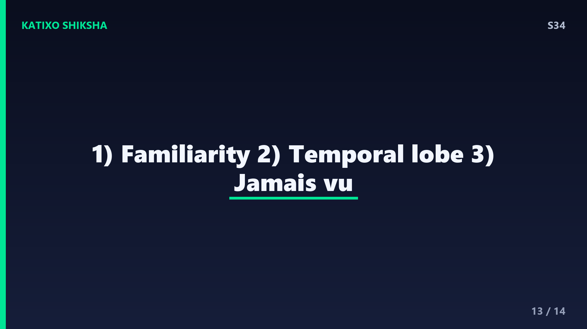
Slide 13जवाब! पहला — deja vu में आ जाता है familiarity यानी अपनापन का एहसास, पर उसके साथ की असली memory गायब रहती है। दूसरा — memory और familiarity से जुड़ा हिस्सा है temporal lobe, जिसमें hippocampus भी होता है। और तीसरा — deja vu का उल्टा, जहाँ जानी चीज़ अजनबी लगे, उसे कहते हैं jamais vu. तीनों सही हो गए? वाह, तुम्हारा temporal lobe तो एकदम तेज़ है — शाबाश!
Slide 14तो आज हमने सीखा — deja vu कोई जादू या भविष्यवाणी नहीं, बल्कि brain का एक छोटा-सा glitch है, जहाँ familiarity का एहसास तो आता है पर असली memory नहीं। ये dual-processing के time-lag, मिलते-जुलते माहौल, या छुपी यादों से होता है — और असल में ये तुम्हारे sharp brain की निशानी है। अगले episode में एक मज़ेदार kitchen science — popcorn आख़िर फूटता क्यों है? बहुत crunchy episode होने वाला है! Subscribe करना मत भूलना दोस्तों! Bye!